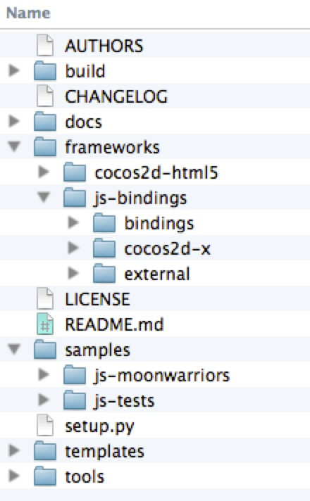
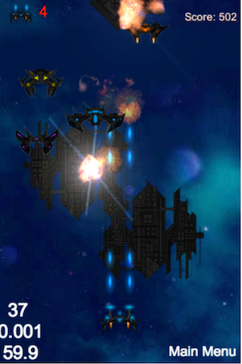
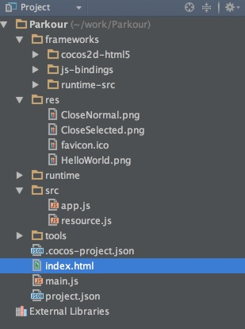
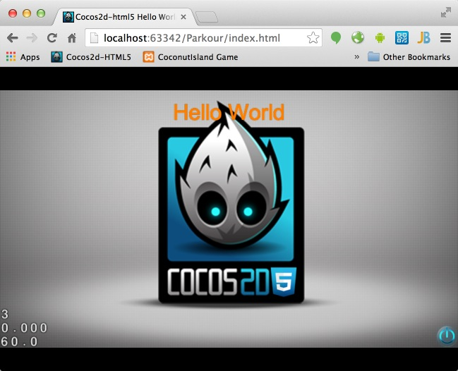

Hello World of Cocos2d-JS
In this tutorial, you will learn how to setup a new Cocos2d-JS project from scratch. We will start with a brief description of Cocos2d-JS's directory structure.
The Cocos2d-JS directory structure
Here is the Cocos2d-JS directory structure:
Figure1

Understanding the directory structures
The directory structure can be separated into three parts:
Part 1: engine related folders
- frameworks directory: hosts the Cocos2d-html5 engine and the Cocos2d-x JavaScript Bindings.
- Cocos2d-html5 directory: holds all the engine modules of Cocos2d-html5, such as engine core modules, audio module, external physics library, CocosBuilder Reader, CocoStudio Reader and other modules. All of the modules are implemented in JS and can be run on the web.
- js-bindings directory: hosts the Cocos2d-x engine, project files of bindings and the external prebuilt SpiderMonkey library. The exported API is writen in JS, and the base modules are implemented in C++. They can be run on native platforms such as iOS, android, Mac, win32 and so on.
Part 2: tests, sample games and templates
-
template directory: used for creating new Cocos2d-JS projects. It includes the HTML5 project and native projects by default. It is used by cocos console to create new projects.
-
samples directory: contains all the tests of Cocos2d-JS. It also includes the playable sample game MoonWarriors. All the tests and games can be launched by cocos console and run on web or native platforms with JavaScript binding.
Part 3: miscellaneous
- README contains some introduction of Cocos2d-JS.
- LICENSE the license of Cocos2d-JS is MIT. You can refer to the license folder under engine root folder to get more details about the licenses of Cocos2d-html5 and Cocos2d-x.
- tools directory: includes cocos console tool and bindings-generator. The template folder contains a build.xml which is a config file for the closure compiler, which can package your game into one single file via Ant.
- build directory: contains project files for built-in samples.
- docs directory: contains JavaScript coding style guide and release notes.
- CHANGELOG contains the changed information of all versions.
- setup.py a python script for the development environment setup.
Taking a look at the built-in examples
When you have downloaded and configured your Cocos2d-JS development environment successfully, it is highly recommended to take a look at the built-in examples. These cover over 90% of Cocos2d-JS's features. It is also the most valuable learning resource that you can currently get.
Taking a look at the tests
Go to the directory Cocos2d-JS/samples/js-tests and run the tests using the cocos console.
cocos run -p web
You will see all the built-in tests of Cocos2d-JS. Here is the screenshot:
Figure 2

The tests are the best learning resources for you. The tests show nearly every feature of Cocos2d-html5. You can tweak these tests files and you will immediately see the result when you refresh the webpage. It is better to have a taste of Cocos2d-html5 this way than reading a lot of documentation at the very beginning.
You also can run the tests on iOS, Android or Mac.
cocos run -p ios|android|mac
Taking a look at the sample games
There are a full game samples included with Cocos2d-JS. All of the source code is completely free and open to you. In this chapter we will take a look at the sample game MoonWarrior.
MoonWarrior
Go the root of the js-moonwariors directory and launch it using the cocos console.
cocos run -p web|ios|android|mac
It is a vertical shooting game. In this game sample, many useful game techniques are applied, including tiled-map, animations, parallax background etc. Here is the screenshot, you can dive into the source code for more information:
Figure 3

Setting up the Parkour project
It is time to create the Parkour project. This project will evolve throughout these tutorials to become a fun parkour game.
Making the project skeleton
As mentioned before, you can create a new project with a specified name. Go to your workspace and use cocos console to create the Parkour project using the command:
cocos new Parkour -l js
Now open WebStorm and open the Parkour directory. The project navigator should look like this:
Figure 4

Right click index.html in WebStorm and choose Debug 'index.html'. Chrome will automatically. You have successfully set up a new project. Cheers! The browser address is:
http://localhost:63342/Parkour/index.html
You should be greeted by the classic Hello World screenshot:
Figure 5

Sample game template code analysis
The template brings us so many things, but we don't know anything about it yet.
Such as what is the main entry of the template program? How are these files organized? What does each file do in the sample application? In this section, these topics will be explained.
Taking a look at all the files of the project
First, let's take a look at all the files and the directory structure of Figure 4, which we showed before.
In Figure 4, we can see:
-
The res directory. It contains all the resource files needed by our project. Right now it only contains some sample images. If you want you can add some meta files for your game or some awesome game music, you should put them in this folder. You should choose a proper name for each file.
-
The src folder. It contains all of your actual game logic. If your game consists of hundreds of JavaScript source files, you might want to organize them into small chunks using subfolders. Right now our template has two JavaScript source files. The app.js file contains the first scene's code. The resource.js file defines some global variables for the resources.
-
The index.html file is the entry point of a HTML5 based web application. It is a HTML5 compatible format. It defines some meta data like setting the viewpoint and fullscreen parameters.
-
The project.json file is the configuration file for our project. Please refer to project.json for more details.
-
The main.js is the place to create your first game scene and show it in the browser. You also can define the resolution policy and preload your resources in it.
Now that you known what these files and folder are for, it is time to understand the source code and the execution path.
Analysis of the project's execution path
It is very important to know a program's execution path.
In our project, the game is loaded into browser from index.html. Then it moves to frameworks/Cocos2d-html5/CCBoot.js. In this file, it will try to load the project configuration from the project.json file.
{
"project_type": "javascript",
"debugMode" : 1,
"showFPS" : true,
"frameRate" : 60,
"id" : "gameCanvas",
"renderMode" : 0,
"engineDir":"frameworks/cocos2d-html5",
"modules" : ["cocos2d"],
"jsList" : [
"src/resource.js",
"src/app.js"
]
}
In this piece of code from project.json, there is a object property named engineDir which is the key point to decide the execution path of the following program. In the default case, we have specified the engineDir.
The main.js file will be loaded after frameworks/Cocos2d-html5/CCBoot.js file and it will initialize the configuration and load all the JavaScript files specified by modules and jsList in our project.json file.
Making some little tweaks of the project
Before we actually do some real coding, we have to make some small tweaks and get our hands dirty.
Hiding the FPS in the left corner of your game screen
The section may be a little bit trivial. We can achieve this by modifying showFPS property to false in project.json.
Here is the code:
{
"project_type": "javascript",
"debugMode" : 1,
"showFPS" : false,
"frameRate" : 60,
"id" : "gameCanvas",
"renderMode" : 0,
"engineDir":"frameworks/Cocos2d-html5",
"modules" : ["cocos2d"],
"jsList" : [
"src/resource.js",
"src/app.js"
]
}
There are many thing we can tweak by modifying this object's properties. Here is a table with each property's intention:
| property name | options | explanation |
|---|---|---|
| debugMode | 0, 1, 2, 3, 4, 5, 6 | 0: close all 1: info level 2: warn level 3: error level 4: info level with web page 5: warn level with web page 6: error level with web page |
| showFPS | true or false | toggle FPS visibility |
| id | "gameCanvas" | the dom element to run cocos2d on |
| frameRate | a positive number above 24, usually between 30 and 60 | adjust the frame rate of your game |
| renderMode | 0, 1, 2 | Choose of RenderMode: 0(default), 1(Canvas only), 2(WebGL only) |
| engineDir | the engine directory related for your project | specify the directory the engine code |
| modules | engine modules | you could customize your engine using modules. Module names are in moduleConfig.json which is located in root of the frameorks/Cocos2d-html5 directory |
| jsList | a list of your game source code | add your own file lists after app.js |
Modify the design resolution size
Currently, Cocos2d-JS takes web browser's full screen as a game canvas. We don't need to manually adjust the canvas size any more. We just need to care about the choosing the resolution size in order to let our game to run seamlessly on iOS and Android with the JavaScript binding technique. We should change the design resolution size to 480*320. Open you main.js and in the function cc.game.onStart change the Resolution Size to 480 by 320.
You should also change the resolution policy to SHOW_ALL:
cc.view.setDesignResolutionSize(480, 320, cc.ResolutionPolicy.SHOW_ALL);
If you are curious about why you should do this, please refer to Resolution Policy Design for Cocos2d-html5 for more information.
Summary
In this tutorial, we have talked about the directory structure and the built-in tests as well as a sample game of Cocos2d-JS. We also created our first project based on the template provided by Cocos2d-JS. In the last part, we took a look at the files and the code structure of the template.
Where to go from here?
In the next tutorial, you will learn how to set up your game's main menu scene. We will do more coding with Cocos2d-JS.